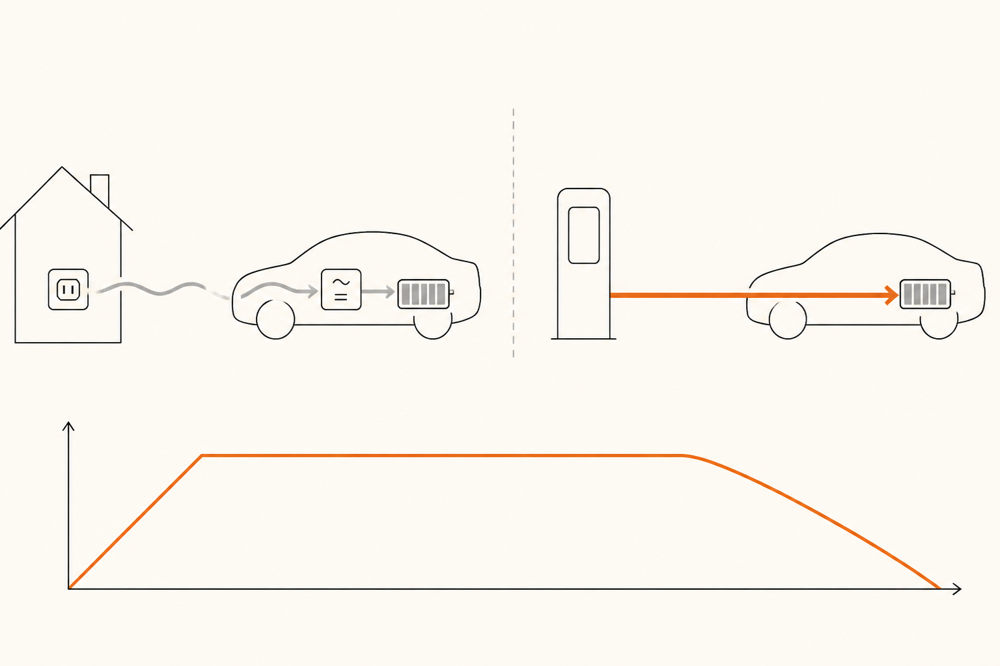

Cargar el coche: AC vs DC
Hay dos formas radicalmente distintas de meter electricidad en una batería de coche eléctrico. Una es lenta, vive en el enchufe de tu casa y carga durante la noche. La otra es rápida, vive en estaciones de carretera y llena el coche en menos tiempo del que tarda un café. Las dos resuelven el mismo problema con filosofías opuestas. Esta píldora te enseña a leer la diferencia.
El problema de fondo
La batería del coche almacena DC. La red eléctrica reparte AC. En algún punto del camino, alguien tiene que traducir. La pregunta es quién traduce y dónde. Y de esa decisión salen dos modos de carga totalmente distintos.
Carga AC. El coche recibe corriente alterna del enchufe y la traduce a bordo con su propio cargador (el OBC de la píldora 6). Es lento porque el OBC del coche es pequeño (típicamente entre 7 y 22 kW como mucho), pero compatible con cualquier enchufe del mundo, desde el doméstico hasta el industrial trifásico.
Carga DC. El coche recibe directamente corriente continua del cargador, ya traducida. La traducción la hace una pieza enorme y cara fuera del coche, en la propia estación de carga. Como ese traductor exterior puede ser muchísimo más grande que el OBC, las potencias son brutales: 50, 150, 350 kW de forma rutinaria.

Las velocidades reales
Para hacer pie con cifras realistas, esta es la tabla mental:
| Tipo | Potencia típica | Tiempo (50 kWh) | Dónde lo encuentras |
|---|---|---|---|
| AC monofásica (enchufe doméstico) | 2,3 kW | ~22 horas | Cualquier enchufe schuko |
| AC monofásica reforzada | 3,7-7 kW | ~7-13 horas | Wallbox de casa básico |
| AC trifásica | 11-22 kW | ~2-5 horas | Wallbox industrial, parkings |
| DC media | 50 kW | ~1 hora | Cargadores antiguos en gasolineras |
| DC alta | 150-250 kW | ~15-30 min (al 80%) | Estaciones modernas en autopista |
| DC ultra | 350 kW | ~10-20 min (al 80%) | Estaciones premium en autopista |
Una observación clave: en AC, la potencia suele estar limitada por el OBC del coche. En DC, está limitada por lo que la batería puede aceptar (que depende de la química, la temperatura, el SoC y la arquitectura — todo lo que vimos en píldoras anteriores). Por eso conectar un coche con OBC de 7 kW a un cargador AC de 22 kW da 7 kW. Pero conectar el mismo coche a un cargador DC de 150 kW da lo que el coche acepte por DC, que puede ser 100 kW perfectamente.
La curva de carga: por qué no es plana
Si miras la potencia de carga DC durante una sesión típica, no verás una línea horizontal. Verás una curva: sube rápido al principio, mantiene un nivel alto entre el 20% y el 80% aproximadamente, y luego baja en el último tramo.
Hay tres razones para esa forma:
Inicio cauteloso. La batería empieza fría o tibia y necesita "arrancar" sus reacciones químicas. Los primeros minutos el cargador da menos potencia que el techo, por seguridad.
Plateau alto. Una vez la batería está caliente y entre el 20% y el 80% de carga, las celdas aceptan la potencia máxima sin estresarse. Es la zona "buena" de la carga rápida y la que justifica todas las cifras de marketing.
Caída final. Pasado el 80%, el voltaje de las celdas se acerca al techo permitido y los iones se acumulan en sitios que ya están cerca de saturarse. Si forzaras la potencia, las dañarías. El BMS reduce progresivamente y, por encima del 90%, la carga es lentísima.
Por eso la regla práctica de la carga rápida en viaje es: cargar del 10% al 80%. Es donde el coche está en su zona dorada. Subir del 80% al 100% suele tardar tanto como bajar del 80% al 10%, y rara vez compensa salvo que necesites esos 100 km extras al final.
Conectores: el zoo
Los conectores son el detalle confuso del coche eléctrico. La buena noticia es que el panorama se ha simplificado mucho. La mala es que aún hay variedad regional.
Tipo 2 (Mennekes). Conector AC estándar en Europa. Soporta monofásica y trifásica, hasta 22 kW. Es el conector "lento" que verás en wallbox y postes urbanos.
CCS Combo (Combined Charging System). Combina el Tipo 2 (parte superior) con dos pines extra gruesos (parte inferior) para DC. Un solo enchufe sirve para AC y para DC. Es el estándar europeo de facto y el más extendido en cargadores rápidos.
CHAdeMO. Conector DC japonés histórico. Está en clara retirada en Europa: cada vez menos coches lo llevan y cada vez menos cargadores nuevos lo incluyen.
NACS (North American Charging Standard). Conector compacto que se está extendiendo en Estados Unidos como estándar único. En Europa convive con CCS y aún no es claro si lo desplazará a medio plazo.
Como conductor europeo, en la práctica solo necesitas saber Tipo 2 (para AC) y CCS Combo (para DC). Lo demás es trivia geográfica.
El protocolo: una conversación antes de la electricidad
Cuando conectas un cargador rápido, la primera media docena de segundos no pasa nada. En realidad sí: el coche y el cargador están hablando. Negocian voltaje, corriente máxima, identidad, autorización de pago, condiciones de la batería. Solo cuando ambos están de acuerdo, fluye la primera décima de amperio.
Esa conversación se llama protocolo de carga. Hay distintas versiones (CCS usa una llamada DIN/ISO, NACS usa otra basada en lo mismo) y van mejorando con el tiempo. Versiones modernas permiten cosas como plug & charge (enchufas y la sesión arranca sola, autenticando el coche, sin sacar tarjeta ni app) o carga bidireccional (el coche puede devolver energía al cargador, como veremos en la píldora 12).
Si alguna vez te has preguntado por qué la carga "tarda en arrancar" o por qué a veces falla con un mensaje raro, suele ser un problema de protocolo: incompatibilidad de versiones, autenticación que no llega, o el coche pidiendo algo que el cargador no entiende. No es la electricidad la que falla; es la conversación.
Cuándo usar cuál
Una regla pragmática:
AC para el día a día. Si tienes acceso a wallbox en casa o en el trabajo, eso cubre el 95% de tu uso. Cargas mientras no usas el coche, sin pensar. La batería y la red lo agradecen (carga lenta = menos estrés químico, menos pico de demanda eléctrica).
DC para viajes. En trayectos largos, paras en un cargador rápido del 10% al 80%, descansas 15-20 minutos, y sigues. Es lo que sustituye la parada en gasolinera. Hacerlo cada día sería innecesario, más caro y peor para la batería a largo plazo.
La carga rápida no daña la batería si se usa con cabeza. Pero un coche que vive de carga rápida diaria envejece más rápido que uno que carga lento por las noches. Por eso el plan ideal sigue siendo: AC siempre que puedas, DC cuando lo necesites.
Fácil¿Por qué la carga AC depende del coche y la carga DC depende del cargador?
Porque la conversión AC→DC tiene que ocurrir en algún sitio. En carga AC ocurre dentro del coche (con su OBC), y la velocidad la limita el OBC. En carga DC ocurre fuera del coche (en la estación), y la velocidad la limita lo que el cargador puede dar y lo que la batería puede aceptar — el coche se salta su OBC.
Fácil¿Qué conector necesitas para carga DC rápida en Europa?
CCS Combo (Combined Charging System). Es el estándar europeo y el conector más extendido en autopistas. CHAdeMO está en retirada y NACS aún no es mayoritario en Europa.
MedioEn carga rápida, ¿por qué la potencia baja después del 80%?
Porque cerca del 100% el voltaje de las celdas se acerca al máximo permitido y los iones de litio se acumulan en zonas casi saturadas. Forzar más corriente las dañaría. El BMS reduce la potencia progresivamente para protegerlas. La consecuencia práctica: del 80% al 100% suele tardar casi tanto como del 10% al 80%.
DifícilVives en piso, sin garaje. Cargas el 100% de las veces en cargador rápido DC público. ¿Qué efecto tendrá esto a largo plazo en la batería y qué podrías hacer para mitigarlo?
La batería se degradará algo más rápido que en uso AC casero. La carga rápida frecuente estresa más las celdas (más calor, más corrientes altas) y acelera el envejecimiento, especialmente en NMC. Para mitigarlo: (1) parar al 80% en lugar de al 100% siempre que sea viable, (2) precondicionar el pack antes de cargar si el coche lo permite, (3) elegir, si puedes, un coche con química LFP, que aguanta mejor el uso intensivo y es habitual en flotas precisamente por esto. La degradación no es catastrófica, pero un coche que carga rápido a diario puede perder un par de puntos de SoH al año más que uno que carga lento.